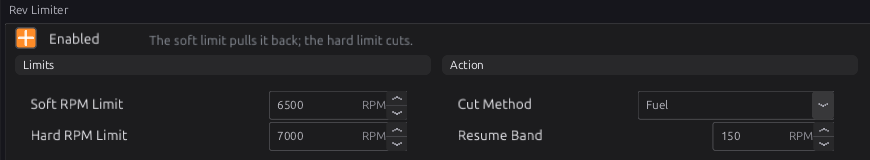
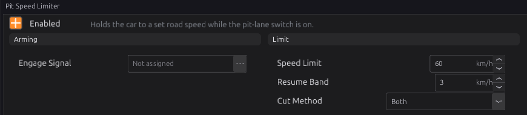
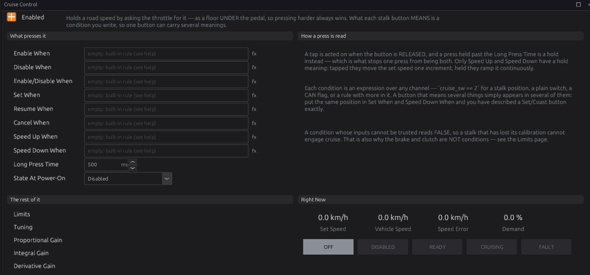
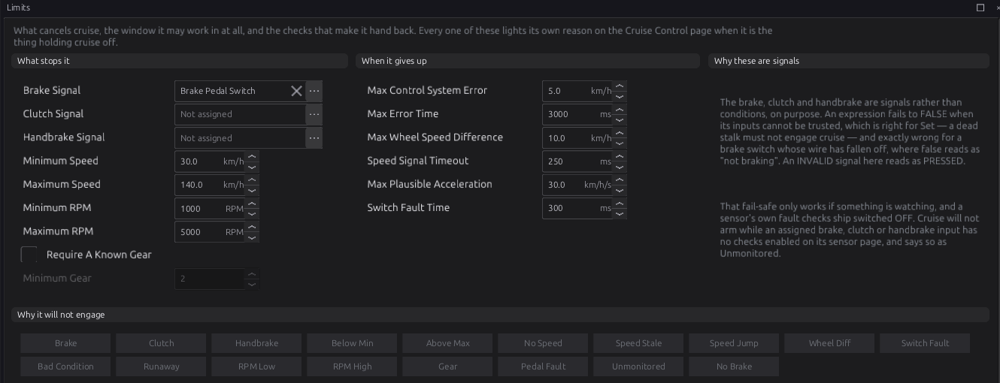

Speed limiting¶
Basic → Advanced
In one sentence: the rev limiter keeps engine speed under a ceiling, the pit limiter keeps road speed under a ceiling, and cruise control holds a road speed by opening an electronic throttle.
What it does¶
Basic
| Module | Where | Limits | By |
|---|---|---|---|
Rev Limiter (rev_limiter) |
Protection | engine speed | cutting fuel and/or ignition |
Pit Speed Limiter (pit_limiter) |
Vehicle Functions | road speed | cutting fuel and/or ignition |
Cruise Control (cruise_control) |
Vehicle Functions | holds a road speed | asking the electronic throttle for more |
The rev limiter is on by default (6500 / 7000 RPM). Check its numbers suit your engine before the first start.
How it works¶
Intermediate
1 · Rev limiter¶
Two limits:
- Soft RPM Limit (default 6500) — from here a progressive cut starts. Between the soft and hard limits the cut ramps from nothing to everything: halfway between them, half the firing events are cut, spread evenly. The engine meets a growing wall rather than hitting one.
- Hard RPM Limit (default 7000) — everything is cut, and stays cut until the speed falls Resume Band (default 150 RPM) below it.
Cut Method (default Fuel) chooses fuel, ignition or both. Set the soft limit equal to the hard one to have no soft stage.

Two more things act near the limit:
- The Rev Limiter ignition correction (chapter 20) can pull timing as the engine approaches the hard limit, so it arrives gently.
- A protection level (chapter 29) can impose a lower limit when a fault is active. That limit is enforced even with Rev Limiter switched off: a limp-home limit cannot be defeated by a tuning switch.
2 · Pit speed limiter¶
While Engage Signal is on (not assigned = always, while enabled), the limiter cuts when road speed goes above Speed Limit (default 60 km/h) and stops cutting when it falls Resume Band (default 3 km/h) below. Cut Method defaults to Both. It uses the road speed, so it works in any gear.

3 · Cruise control: what it drives¶
Cruise publishes Cruise Demand cruise_demand, a throttle percentage. The electronic throttle
(chapter 22) uses it as a floor under the pedal: the plate opens to whichever is higher, so the
driver can always go faster by pressing the pedal. Without an electronic throttle, cruise control has
nothing to move.
4 · Cruise control: the states¶
| State | Means |
|---|---|
| Off | switched off in the tune |
| Disabled | the driver's main switch is off |
| Ready | armed; waiting for Set or Resume |
| Cruising | holding the set speed |
| Fault | something cannot be trusted; engagement is blocked |
State At Power-On is Disabled by default (for a stalk with a main on/off). Choose Ready for controls that only have Set and Resume.
5 · Cruise control: the buttons¶
Each action is a condition (an expression, chapter 34), so any switch, stalk position or CAN flag can drive it:
| Condition | Does |
|---|---|
| Enable When / Disable When | Disabled → Ready / → Disabled (forgets the set speed) |
| Enable/Disable When | toggles between them (one main button) |
| Set When | from Ready: cruise at the current speed. While cruising: re-set to the current speed |
| Resume When | from Ready: go back to the speed Cancel kept |
| Cancel When | stop cruising, keep the set speed |
| Speed Up When / Speed Down When | tap: ± Speed +/- Increment (1.0 km/h). Hold longer than Long Press Time (500 ms): ramp at Accelerate Rate / Coast Rate (2.0 km/h/s) |
A tap acts when the button is released, so one press is never both a tap and a hold. The same
condition can appear in two actions — for example the same stalk position in Set When and
Speed Down When makes a Set/Coast button. For a multi-position cruise stalk on one analog input,
set up the Cruise Control Switch sensor (chapter 17) and write conditions such as
cruise_sw == 2.
6 · Cruise control: what stops it¶
Cancel (the set speed is kept, so Resume works) happens when:
- the Brake Signal, Clutch Signal or Handbrake Signal reads pressed — or reads invalid, because a switch that has stopped reporting must not look like "not pressed". These drop the throttle floor on the same frame.
- the speed leaves Minimum Speed … Maximum Speed (30–140 km/h), the engine speed leaves Minimum RPM … Maximum RPM (1000–5000), or, with Require A Known Gear, the gear is below Minimum Gear. A button cancel or a window exit bleeds the floor away over Cancel Decay Time (0.5 s).
Fault (the set speed is forgotten, and cruise stays out until every cause has cleared and a button is pressed again) happens when:
| Reason | Check |
|---|---|
| No road speed, or it stopped updating for longer than Speed Signal Timeout (250 ms) | P17A0 |
| The road speed changes faster than Max Plausible Acceleration (30 km/h/s) | P17A1 |
| The cruise stalk sensor is enabled but reads in no band for Switch Fault Time (300 ms) | P17A2 |
| The speed stays more than Max Control System Error (5 km/h) from target for Max Error Time (3 s) | P17A4 |
| The four wheel speeds differ by more than Max Wheel Speed Difference (10 km/h) | P17A5 |
| The accelerator pedal has faulted (chapter 22) | P17A6 |
| A button condition does not compile | P17A7 |
| An assigned brake, clutch or handbrake sensor has no fault checks enabled | P17A8 |
| No Brake Signal assigned at all | P17A9 |
Turning the key off is not a fault: cruise switches off with the key (the sensors are not read with the key off), and the next key-on starts it in State At Power-On with nothing to acknowledge.
Why it will not engage on the Limits page lights the reason for each block.
7 · Cruise control: the loop¶
While cruising, a PID controller (Cruise Proportional, Integral and Derivative Gain, curves by speed error) sets the demand, up to Maximum Throttle Demand (60 %), changing no faster than Max Throttle Ramp Rate (20 %/s). On engagement the demand starts where the pedal already is, so the car does not surge or dip. While the driver presses the pedal past the cruise demand, the integral part is frozen, so lifting off does not cause a dip.
Before you start¶
Basic
- Rev limiter: know your engine's safe maximum speed.
- Pit limiter and cruise: a road speed (chapter 32).
- Cruise: an electronic throttle (chapter 22); a brake pedal switch set up as a sensor with its fault checks enabled (chapter 17); your buttons or stalk set up as sensors.
Setting it up¶
Intermediate
Step 1 — Rev limiter¶
Open Configuration ▸ Protection ▸ Rev Limiter. Set the Hard RPM Limit below the engine's mechanical limit with real margin, and the Soft RPM Limit 300–500 RPM under it. Keep Cut Method Fuel for a road car; Ignition recovers faster but puts unburnt fuel into the exhaust.
Step 2 — Pit limiter¶
Open Pit Speed Limiter, tick Enabled, assign Engage Signal to your pit-lane button, and set Speed Limit.
Step 3 — Cruise control¶
Open Configuration ▸ Vehicle Functions ▸ Cruise Control and tick Enabled.

- Write the button conditions for your controls (see the examples).
- On Limits, check Brake Signal is your brake switch, and assign the clutch on a manual. On each of those sensors' pages, enable their fault checks.
- Drive on a quiet road above 30 km/h: enable, set, and watch Set Speed, Vehicle Speed, Speed Error and Demand. Press the brake: cruise must cancel at once.

Worked examples¶
Intermediate
Example 1 — a four-position stalk on one analog input
Cruise Control Switch sensor calibrated so position 1 = main, 2 = set/coast, 3 = resume/accel, 4 = cancel.
| Condition | Expression |
|---|---|
| Enable/Disable When | cruise_sw == 1 |
| Set When | cruise_sw == 2 |
| Speed Down When | cruise_sw == 2 |
| Resume When | cruise_sw == 3 |
| Speed Up When | cruise_sw == 3 |
| Cancel When | cruise_sw == 4 |
Example 2 — two steering-wheel buttons over CAN
State At Power-On Ready; Set When and Resume When name your two CAN button channels (chapter
33 shows how to receive them), for example can_btn_set and can_btn_res; Speed Up and Speed
Down on the same two buttons held. No stalk sensor: the switch fault check does not apply.
Example 3 — pit limiter on a button
Engage Signal = the pit button sensor; Speed Limit 60 km/h; Resume Band 3 km/h; Cut Method Both.
Tuning it¶
Advanced
- Rev limiter: if the engine bounces off the limit, widen the gap between soft and hard; if it overshoots the hard limit on a fast gear, lower the soft limit.
- Cruise: if the speed wanders slowly, raise the integral gain; if it surges up and down, lower the proportional gain. Uphill, if it runs out of throttle, raise Maximum Throttle Demand.
Diagnostics¶
Intermediate
The cruise codes P17A0–P17A9 are listed in section 6; all are severity 1 (warnings) and hold cruise off. The rev and pit limiters set no codes.
Live channels: soft_cut_pct, rpm_to_limit, pit_limit_active, cruise_state, cruise_active,
cruise_target, cruise_demand, cruise_error_kph, cruise_inhibit.
Troubleshooting¶
Basic → Advanced
| Symptom | Likely causes | Check |
|---|---|---|
| Engine stops revving well below the limit | A protection level's limit is active | Chapter 29; the active codes |
| Pit limiter never cuts | Engage Signal off; no road speed | pit_limit_active, vehicle_spd |
| Cruise sets but nothing happens | No electronic throttle; Maximum Throttle Demand too low | Chapter 22 |
| Cruise will not leave Disabled | No Enable condition and power-on state Disabled | State At Power-On Ready, or an Enable When |
| Cruise shows Fault at once | No brake assigned; brake sensor fault checks off; a condition does not compile | The Limits page's reason lamps |
| Cruise cancels on its own | Speed or RPM outside the window; runaway error on a hill | Minimum/Maximum Speed and RPM; Max Control System Error |
Settings reference¶
Rev Limiter:
| Setting | What it does |
|---|---|
Rev Limit Enabledrev_limiter.enabledRange: Off or On Default: On |
The engine's RPM ceiling. Turning it OFF does not remove every limit: the protection rev limit that EngineProtection asks for over the bus is still enforced, because a DTC-driven limp home cannot be defeated by a tuning switch. What this disables is the SOFT and HARD limits configured here. |
Hard RPM Limitrev_limiter.hard_limit_rpmRange: 0 to 12000 Default: 7000 Units: RPM |
The cut. At or above this RPM the configured cut is applied outright and held until the RPM falls into the resume band. This is the number that must be under the engine's mechanical limit with real margin — it is reached under load, in anger, with a heavy foot. |
Soft RPM Limitrev_limiter.soft_limit_rpmRange: 0 to 12000 Default: 6500 Units: RPM |
Where the progressive cut begins, below the hard limit. Between soft and hard the cut duty ramps from nothing to everything, so the engine meets a wall that grows rather than a wall that appears — better for the drivetrain and far more controllable at the top of a gear. Set it equal to or above the hard limit and there is no soft stage at all. |
Cut Methodrev_limiter.cut_methodRange: one of: Fuel, Ignition, Both Default: Fuel |
What gets cut at the hard limit. FUEL is the kindest to the exhaust — no unburnt charge reaches it — but recovers slightly more slowly. IGNITION recovers instantly and is what makes the bang; sustained, it can melt a turbine or a catalyst. BOTH is the most positive. |
Resume Bandrev_limiter.resume_band_rpmRange: 0 to 500 Default: 150 Units: RPM |
How far below the hard limit the RPM must fall before the cut releases. Without it the engine would sit exactly on the limit switching the cut on and off every cycle; this band converts that into a slower, survivable bounce. |
Pit Speed Limiter:
| Setting | What it does |
|---|---|
Pit/Speed Limiter Enabledpit_limiter.enabledRange: Off or On Default: Off |
Hold the car at a set road speed by cutting — a pit-lane limiter. It acts on VEHICLE SPEED, not RPM, so the limit holds in whatever gear the driver happens to be in. |
Engage Signalpit_limiter.arm_sigRange: -1 to 32767 Default: -1 |
Bus signal (button) that engages the limiter. Not assigned = always engaged when enabled. |
Speed Limitpit_limiter.speed_kphRange: 0 to 400 Default: 60 Units: km/h |
The speed being held. The cut engages ABOVE this and stays engaged until the speed falls a full Resume Band below it, so the limiter settles into a slow cycle around the limit rather than chattering on and off at it. |
Resume Bandpit_limiter.hyst_kphRange: 0 to 50 Default: 3 Units: km/h |
How far below the limit the speed must fall before the cut releases. Too small and the limiter chatters at the threshold, which is unpleasant and hard on the exhaust; too large and the car slows noticeably below the limit before pulling again. |
Cut Methodpit_limiter.cut_methodRange: one of: Fuel, Ignition, Both Default: Both |
What gets cut. FUEL is the gentler choice for a limiter that may be held for a long time — an ignition cut pumps unburnt fuel into a hot exhaust for the whole pit lane. IGNITION recovers faster. BOTH is the most positive and the harshest. |
Cruise Control:
| Setting | What it does |
|---|---|
Cruise Enabledcruise_control.enabledRange: Off or On Default: Off |
Hold a road speed by asking the throttle for it. It needs the drive-by-wire throttle to consume that request — this module never drives an output itself. |
State At Power-Oncruise_control.power_on_stateRange: one of: Disabled, Ready Default: Disabled |
Where the system starts after a key cycle. Disabled needs an Enable condition to arm it, which is what a stalk with a main On/Off position gives you. Ready is for a stalk that has no main switch at all — without it, buttons that only Set and Resume could never leave Disabled. |
Enable Whencruise_control.enable_exprRange: 0 to 0 Default: 0 |
Arms the system: Disabled becomes Ready. A stalk main switch is cruise_sw == 1. Read on the RELEASE of a press, so holding a button does not re-arm repeatedly. |
Disable Whencruise_control.disable_exprRange: 0 to 0 Default: 0 |
Switches the system off from any state and throws away the set speed. A Resume after a Disable has nothing to resume to, deliberately. |
Enable/Disable Whencruise_control.enable_disable_exprRange: 0 to 0 Default: 0 |
One momentary button that TOGGLES between Disabled and Ready, which is what most stalk main buttons actually are. Use this or the separate Enable/Disable pair, not both. |
Set Whencruise_control.set_exprRange: 0 to 0 Default: 0 |
Engages at the road speed you are doing now, if nothing is inhibiting it. Pressed again while cruising it re-latches the set speed to the current speed. |
Resume Whencruise_control.resume_exprRange: 0 to 0 Default: 0 |
Re-engages at the speed kept from the last Cancel. Does nothing when there is no kept speed. |
Cancel Whencruise_control.cancel_exprRange: 0 to 0 Default: 0 |
Pauses cruise and KEEPS the set speed. This only ADDS reasons to cancel — the brake, clutch and handbrake inputs cancel on their own and cannot be switched off from here. |
Speed Up Whencruise_control.bump_up_exprRange: 0 to 0 Default: 0 |
Tapped, raises the set speed by one increment. Held past the Long Press Time, accelerates continuously at the Accelerate Rate until released. |
Speed Down Whencruise_control.bump_down_exprRange: 0 to 0 Default: 0 |
Tapped, lowers the set speed by one increment. Held, coasts down at the Coast Rate. |
Long Press Timecruise_control.long_press_msRange: 100 to 5000 Default: 500 Units: ms |
How long a press must be held before it counts as a hold rather than a tap. A tap is acted on when the button is RELEASED, which is what stops one press from being both. |
Brake Signalcruise_control.brake_sigRange: -1 to 32767 Default: 58 |
Cancels the moment it reads pressed, and cancels if it goes INVALID — a brake switch that has stopped reporting must never be mistaken for a foot off the brake. Cruise will not arm at all with this unassigned: a system whose only way out is a button has no reflex behind it. |
Clutch Signalcruise_control.clutch_sigRange: -1 to 32767 Default: -1 |
Cancels on clutch press, under the same fail-safe rule as the brake. Leave it unassigned on an automatic, or on anything with no clutch switch fitted: assigning an input that never reports reads as a pedal held down for ever, and cruise will not engage at all. |
Handbrake Signalcruise_control.handbrake_sigRange: -1 to 32767 Default: -1 |
Optional, and unassigned by default for the same reason as the clutch: assign it only if the switch is actually there and reporting. |
Minimum Speedcruise_control.min_speed_kphRange: 0.0 to 400.0 Default: 30.0 Units: km/h |
Below this speed cruise cancels and will not engage. It keeps the system out of the range where holding a speed is a low-gear crawl and a small speed error is a large throttle error. |
Maximum Speedcruise_control.max_speed_kphRange: 0.0 to 400.0 Default: 140.0 Units: km/h |
Above this speed cruise cancels and will not engage. With the minimum it defines the only window the system may operate in; leaving that window is treated exactly like a brake press, except that the demand is bled out rather than dropped. |
Speed +/- Incrementcruise_control.speed_increment_kphRange: 0.1 to 20.0 Default: 1.0 Units: km/h |
How far one tap of Speed Up or Speed Down moves the set speed. |
Accelerate Ratecruise_control.accel_rate_kph_sRange: 0.1 to 50.0 Default: 2.0 Units: km/h/s |
How fast the set speed climbs while Speed Up is HELD. This is the closest thing to an acceleration limit: the throttle chases the set speed, so how briskly that speed moves is how briskly the car does. |
Coast Ratecruise_control.coast_rate_kph_sRange: 0.1 to 50.0 Default: 2.0 Units: km/h/s |
How fast the set speed falls while Speed Down is HELD. Releasing leaves the set speed where the ramp had reached, rather than snapping it to the current speed. |
Minimum RPMcruise_control.min_rpmRange: 0 to 12000 Default: 1000 Units: RPM |
Cruise cancels and will not engage below this engine speed. 0 turns the RPM gate off. |
Maximum RPMcruise_control.max_rpmRange: 0 to 12000 Default: 5000 Units: RPM |
Cruise cancels and will not engage above this engine speed. 0 turns the RPM gate off. |
Require A Known Gearcruise_control.gear_check_enabledRange: Off or On Default: Off |
Refuse to engage, and cancel, unless gear detection reports a real gear at or above the minimum. Neutral and "not known" both read as gear 0 and are treated the same, because holding a road speed with the box out of gear is holding an ENGINE speed, which is not what was asked for. |
Minimum Gearcruise_control.min_gearRange: 1 to 8 Default: 2 |
The lowest gear cruise will hold a speed in, when Require A Known Gear is on. |
Maximum Throttle Demandcruise_control.max_demand_pctRange: 0.0 to 100.0 Default: 60.0 Units: % |
Ceiling on the cruise throttle floor, and also the limit of the integrator's authority — the anti-windup is set to exactly this, so the loop cannot quietly accumulate demand it will never be allowed to apply. |
Max Throttle Ramp Ratecruise_control.max_ramp_pct_sRange: 0.0 to 1000.0 Default: 20.0 Units: %/s |
How fast the cruise throttle floor may move. It does NOT apply at the instant of engagement — the floor starts exactly where the pedal already was, so the hand-over is seamless; this limits everything after that. |
Cancel Decay Timecruise_control.cancel_decay_sRange: 0.000 to 5.000 Default: 0.500 Units: s |
How long the throttle floor takes to bleed away after a button cancel or a speed-window exit. It does NOT apply to a brake, clutch or handbrake cancel, or to a fault: those go to zero on the same frame, because a residual throttle floor is the last thing a driver reaching for the brake wants. |
Max Control System Errorcruise_control.max_error_kphRange: 0.0 to 50.0 Default: 5.0 Units: km/h |
How far the road speed may sit from the set speed before cruise gives up. A loop that cannot reach its target is a loop fighting something it does not know about, and holding the throttle open into that is how a cruise system runs away. 0 disables. |
Max Error Timecruise_control.max_error_msRange: 0 to 20000 Default: 3000 Units: ms |
The error has to exceed the limit for THIS LONG before cruise gives up. Without a time, every steep hill and every headwind gust trips it — a magnitude on its own is a false-alarm generator, not a safety check. |
Max Wheel Speed Differencecruise_control.max_wheel_diff_kphRange: 0.0 to 50.0 Default: 10.0 Units: km/h |
Cancel when the four wheel speeds disagree by more than this — one wheel spinning or locked means the road speed is not what any single sensor says. Checked only when ALL FOUR wheel speeds are reading, so a car with fewer sensors skips the check rather than being permanently held off by it. 0 disables. |
Speed Signal Timeoutcruise_control.spd_max_age_msRange: 20 to 5000 Default: 250 Units: ms |
How stale the road-speed signal may be and still be believed. A speed that has stopped updating is not a speed of zero, and a controller that treats it as one holds the throttle exactly where it was. |
Max Plausible Accelerationcruise_control.max_accel_kph_sRange: 0.0 to 200.0 Default: 30.0 Units: km/h/s |
A road speed that changes faster than this did not come from a car. The reading is not believed and cruise cancels. 0 disables. |
Switch Fault Timecruise_control.sw_fault_msRange: 0 to 5000 Default: 300 Units: ms |
How long the cruise switch may read in NO calibrated band before it counts as a fault. Checked only when the Cruise Control Switch sensor is enabled; cruise driven from separate buttons or CAN flags has no stalk to fault. The band decoder already allows time for crossing between positions, so this sits above that; it also covers the moment after power-up when nothing has settled yet. |
Cruise Proportional Gain X Channelcruise_control.cruise_p_gain_x_srcRange: -1 to 32767 Default: 43 |
WHICH SIGNAL the X axis of 'Cruise Proportional Gain' is looked up on. The axis holds the breakpoints; this says what is compared against them, so changing it re-points the table at a different quantity without moving a single cell — and the breakpoints, chosen for the old signal's range and units, will almost certainly need redrawing. |
Cruise Integral Gain X Channelcruise_control.cruise_i_gain_x_srcRange: -1 to 32767 Default: 43 |
WHICH SIGNAL the X axis of 'Cruise Integral Gain' is looked up on. The axis holds the breakpoints; this says what is compared against them, so changing it re-points the table at a different quantity without moving a single cell — and the breakpoints, chosen for the old signal's range and units, will almost certainly need redrawing. |
Cruise Derivative Gain X Channelcruise_control.cruise_d_gain_x_srcRange: -1 to 32767 Default: 43 |
WHICH SIGNAL the X axis of 'Cruise Derivative Gain' is looked up on. The axis holds the breakpoints; this says what is compared against them, so changing it re-points the table at a different quantity without moving a single cell — and the breakpoints, chosen for the old signal's range and units, will almost certainly need redrawing. |
Gain X Axis (Cruise Speed Error) binscruise_control.cruise_err_axis_nRange: 2 to 16 Default: 8 |
How many breakpoints of 'Gain X Axis (Cruise Speed Error)' are LIVE, out of 16 allocated. Shrinking the axis does not delete the values past the end — they stay in the tune and reappear if it is grown again. Every table sharing this axis is resized with it. Fewer, well-placed breakpoints beat many evenly-spaced ones: resolution is only worth spending where the surface actually bends. |
Cruise Proportional Gaincruise_control.cruise_p_gainRange: 0.00 to 30.00 Default: 8-point curve |
Throttle percent per kph of speed error, applied the moment the error appears. It sets how hard the system answers a hill arriving. Too much and the car surges: it overshoots, backs off, and does it again. |
Cruise Integral Gaincruise_control.cruise_i_gainRange: 0.00 to 30.00 Default: 8-point curve |
Throttle percent per kph of error per second, accumulating while the error refuses to go away. This is what removes the last of a steady error so the car settles ON the set speed rather than a little under it up a grade. Highest at zero error and falling away, because out at a large error the proportional term is already doing the work and this would only wind up. |
Cruise Derivative Gaincruise_control.cruise_d_gainRange: 0.00 to 30.00 Default: 8-point curve |
Throttle percent per kph-per-second of error CHANGE — the brake on an overshoot. It answers how fast the gap is opening or closing rather than how big it is, which is what lets the other two be set hard enough to actually hold a speed. |
Gain X Axis (Cruise Speed Error)cruise_control.cruise_err_axisRange: 0 to 0 Default: 8-point curve Units: km/h |
Speed-error breakpoints for all three gain curves, as set speed MINUS road speed: positive means you are below the set speed and the system should add throttle. Zero must sit ON a breakpoint, or the gains either side of the target are an interpolation of two things nobody asked for. |
Related¶
- Chapter 17 — Sensors (brake, clutch and cruise switches)
- Chapter 20 — Ignition (the rev-limit timing correction)
- Chapter 22 — Electronic throttle (what cruise drives)
- Chapter 29 — Engine protection (protection rev limits)
- Chapter 32 — Vehicle functions (road speed)
- Chapter 34 — Generic tables and expressions (the button conditions)